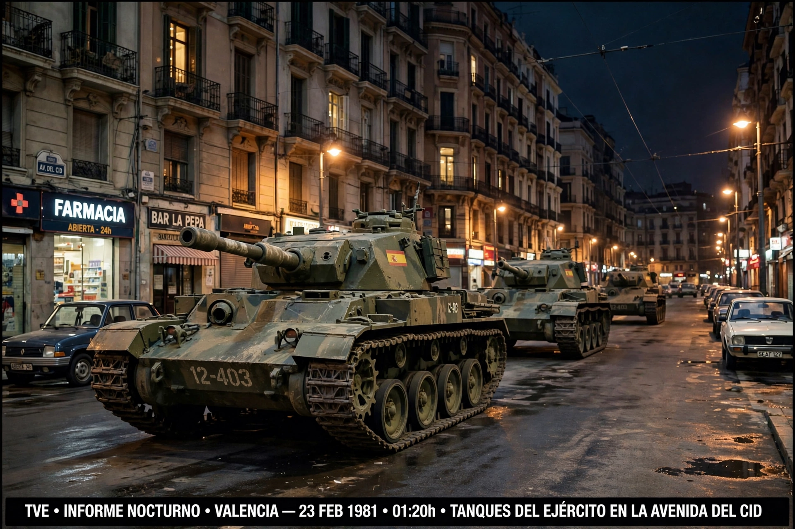

| 1981 Spanish coup d'état attempt | |
|---|---|
 | |
| Date | 23–24 February 1981 |
| Location | Spain |
| Also known as | El Tejerazo; 23-F |
| Result | Failure; Spanish democracy consolidated |
The 1981 Spanish coup d'état attempt (Spanish: Intento de golpe de Estado del 23 de febrero de 1981), widely called the 23-F or el Tejerazo, was the last serious attempt by elements of the Spanish armed forces to reverse the democratic transition that followed the death of Francisco Franco in 1975. It centred on the armed occupation of the Congress of Deputies in Madrid on the night of 23–24 February 1981.
By 1981, Spain's young democracy faced ETA terrorism, economic crisis, regional-autonomy disputes, and restiveness among Francoist officers. The resignation of Prime Minister Adolfo Suárez in January 1981 deepened the sense of drift. Hard-line officers plotted a "corrective" intervention, with differing visions: a hard coup led by figures such as Jaime Milans del Bosch and Antonio Tejero, and a softer option associated with General Alfonso Armada, who envisioned a coalition government under his own leadership with royal acquiescence.
The coup collapsed after King Juan Carlos I telephoned the captains general and then addressed the nation on television, in military uniform, affirming his commitment to democracy. The Congress hostages were freed on 24 February. A 1982 trial at Campamento convicted 30 officers and one civilian; Tejero, Milans del Bosch, and Armada received 30-year sentences. The failure of 23-F is generally seen as the point after which military coups ceased to be a realistic threat to Spanish democracy.